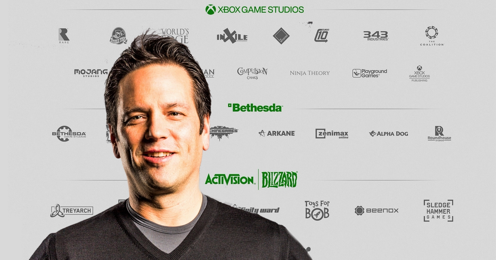

Phil Spencer fala sobre compra da Activision e futuro com menos exclusivos
postado 24 de agosto 2022 Phil Spencer, CEO da Microsoft Gaming (Imagem: Divulgação/Microsoft)
Phil Spencer, CEO da Microsoft Gaming (Imagem: Divulgação/Microsoft)
Sendo o principal chefão no que se refere aos games na Microsoft, Phil Spencer pode ser considerado como alguém que vem mudando a indústria. Além de ajudar a introduzir o Game Pass, o executivo é uma parte importante nas aquisições que a casa do Xbox vem fazendo nos últimos anos. Em uma entrevista realizada nesta quarta (24), ele ressaltou os desafios que pode encontrar ao adquirir a Activision Blizzard, mas também tocou em outros assuntos.
Divulgada pelo Bloomberg, a entrevista de Phil Spencer começa com ele comentando sobre como está o percurso da compra da dona de franquias como Diablo e Overwatch pela Microsoft. O executivo afirma que se sente bem com o progresso feito até então, porém com ressalvas:

Eu entro no processo apoiando pessoas que talvez não estejam tão próximas da indústria de jogos. Elas estão fazendo perguntas boas e difíceis sobre ‘qual é a nossa intenção? O que isso significa? Se você alcançar isso ao longo de cinco anos, isso seria constrição de um mercado?’. Eu nunca fiz um acordo de 70 bilhões de dólares, então não sei o que a minha confiança significa. Porém, vou dizer que as discussões que temos tido parecem positivas.
Confira a matéria completa clique aqui por Ricardo Syozi